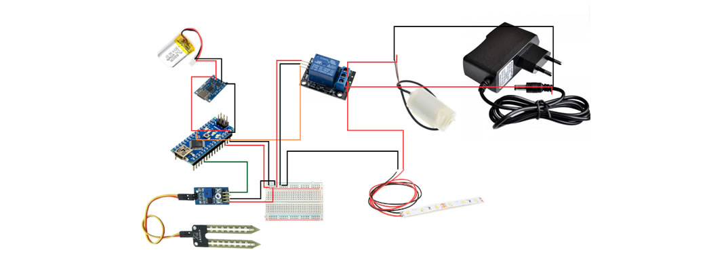

Ultima prueba de circuito
Realizamos una última prueba del circuito utilizando el esquema que preparamos para la presentación. Este esquema fue fundamental, ya que nos permitió identificar cada paso y asegurarnos de que cada cable estuviera conectado correctamente. Con el diagrama en mano, seguimos las conexiones paso a paso, verificando cada detalle para evitar errores.
Esta cuidadosa revisión nos dio la confianza de que todo estaba bien conectado y funcionando como debía. pudimos resolver cualquier problema rápidamente y asegurar el correcto funcionamiento de nuestro sistema. Esta práctica no solo simplificó el proceso, sino que también nos dio una comprensión más profunda de la interconexión de los componentes, haciendo que la tarea fuera mucho más manejable y efectiva.
Dejamos el circuito completamente listo para ser integrado dentro de la maceta, que ya se encontraba en proceso de impresión. Aseguramos que todas las conexiones estuvieran correctamente realizadas y verificamos el funcionamiento del sistema para evitar problemas durante la instalación final.
Además, organizamos los cables de manera ordenada para facilitar su integración y minimizar el riesgo de interferencias o fallos. El diseño del circuito fue cuidadosamente pensado para encajar perfectamente en el espacio destinado dentro de la maceta, optimizando tanto su funcionalidad como su estética.